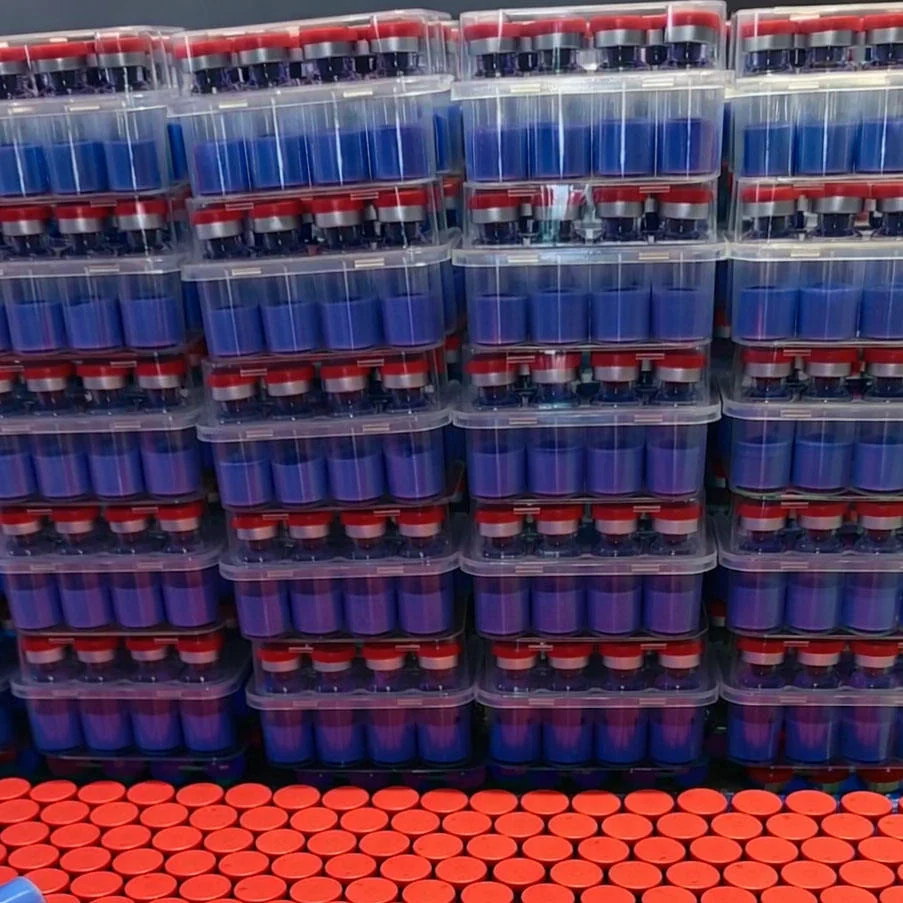

SKIN CARE • PRIVATE LABEL PRODUCT
Organic Moisturizing Hydrating Overnight Hydrogel Bio-collagen Gel Night Face Sheet Mask
This Bio Collagen Real Deep Hydrogel Facial Mask is designed to provide intensive hydration, glow support, and a smoother-looking skin finish. Formulated with hydrolyzed collagen, niacinamide, hyaluronic acid, and galactomyces ferment filtrate, it helps support hydrated, brighter, firmer-looking skin without heavy residue. The separated upper and lower mask design offers a flexible fit for different face shapes.
Fast
Response
Response
Quality
Assurance
Assurance
OEM/ODM
Support
Support
Global
Shipping
Shipping
HighlightsIngredientsCustomizationFAQRelated Products
Product Highlights
Key Selling Points
Pore Tightening & Firming
Deep Hydration and Moisturizing
Brightens the Skin
After-sun Hydration Rescue
Unique Overnight Absorption
Formula Reference
Key Ingredients
| Ingredient |
|---|
| Collagen |
| hyaluronic_acid |
B2B Customization
OEM / ODM Customization
Custom FormulaCustom Color / ScentCustom Bottle / Tube / JarCustom LabelCustom BoxCustom Size / VolumeMOQ: 1000pcsLead Time: 7-10 working days
Product FAQ
Questions About Organic Moisturizing Hydrating Overnight Hydrogel Bio-collagen Gel Night Face Sheet Mask
What is a white-to-clear hydrogel collagen mask?
A white-to-clear hydrogel collagen mask is a facial mask that appears white when first applied and gradually turns transparent as it adheres to the skin. It is designed to provide hydration and support smoother, healthier-looking skin.
What are the main benefits of a collagen hydrogel facial mask?
A collagen hydrogel facial mask helps hydrate the skin, improve the look of dullness, support a firmer-looking complexion, and leave the skin feeling smoother and more refreshed after use.
What ingredients are commonly used in this Bio Collagen Real Deep Mask?
This type of hydrogel mask commonly features hydrolyzed collagen, niacinamide, hyaluronic acid, and galactomyces ferment filtrate to support hydration, radiance, and a smoother-looking skin texture.
Is this collagen hydrogel mask suitable for sensitive skin?
Yes, this mask is designed for all skin types, including sensitive skin. It is fragrance-free and non-comedogenic, making it suitable for daily, weekly, or overnight skincare routines.
How long should I wear a white-to-clear collagen facial mask?
The mask can be worn according to the product instructions. Many white-to-clear hydrogel masks are designed for extended use, such as 2–4 hours or overnight, until the mask becomes more transparent.
Related Products
Build A Complete Product Line

Collagen Multi PDRN Balm, Hydrating Under Eye Care for Face, Neck & Smile Lines

GHK-CU & SNAP-8 Peptide Serum – Hydrating Firming Anti-Aging Facial Serum

99%+ Cosmetic Ingredient GHK CU 50mg100mg AHKCU Powder GHK-CU Blue Copper Peptide

Private Label GHK-CU Copper Peptide Face Cream
Contact for Price
Request A Quote For Organic Moisturizing Hydrating Overnight Hydrogel Bio-collagen Gel Night Face Sheet Mask
Send us your target market, quantity, formula requirements and packaging idea. We will reply with a practical OEM/ODM solution.